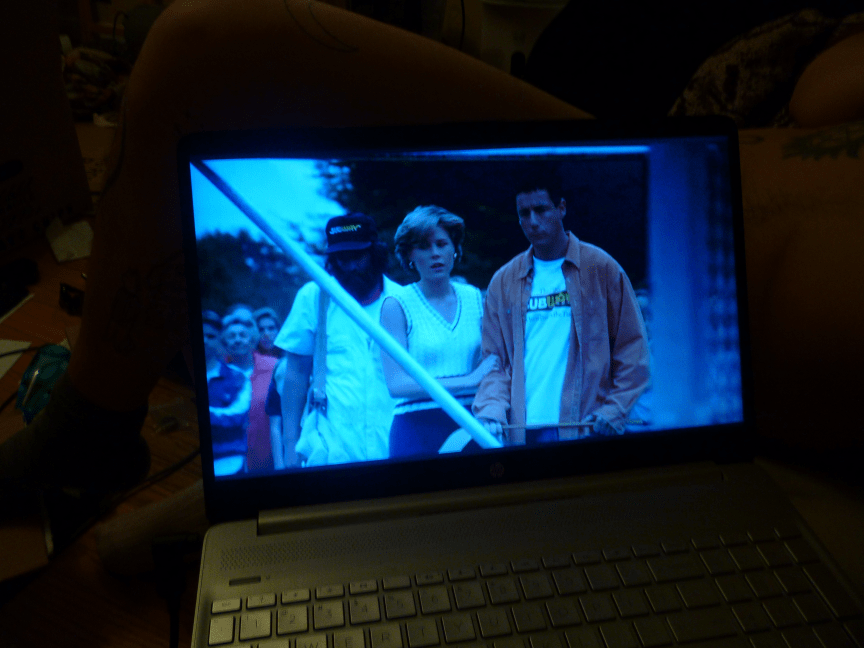

Happy Gilmore
(1996)
Happy Gilmore is a 1996 Adam Sandler movie, which means it's actually funny and endearing. He didn't direct it, so it's not just bad jokes and Adam Sandler yelling. I like this movie. This genre of movie (snobs vs slobs) is like, a 1980s genre or movie type whatever. This is probably one of the last enjoyable ones of this type. 8/10
Sidenote: I want a Subway (c) Footlong Sub now!